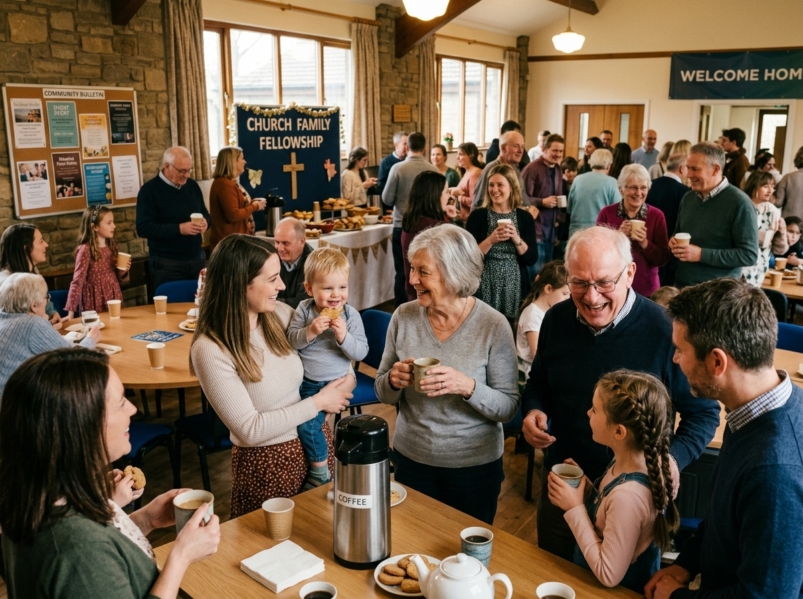

Discover purposeful, Christ-centered ministries designed to nurture spiritual growth for every age group.

We take great joy in serving young families! Our nursery provides a cheerful, clean, and secure haven for infants and toddlers during our Sunday Morning 10:00 AM worship service.
Staffed by experienced church workers, our nursery allows mothers and fathers to enjoy the preaching of the Word without distraction, knowing their little ones are receiving attentive, loving care.
"Study to shew thyself approved unto God, a workman that needeth not to be ashamed, rightly dividing the word of truth." — 2 Timothy 2:15 (KJV)
9:00 AM: Adult and Teen Sunday School classes gather for in-depth doctrinal study, open discussion, and practical Christian living applications.
10:00 AM: Concurrently with the main service, young children's classes provide age-appropriate Bible stories, scripture memorization, and gospel lessons.
Join a Class This Sunday
Wednesday evening is the spiritual heartbeat of our church week. We come together in the sanctuary to share burden requests, praise reports, and pray specifically for our missionaries, the sick, and our nation.
Following prayer time, our Pastor leads an engaging verse-by-verse exposition through books of the King James Bible.
Our youth and family ministries provide positive Christian community, monthly activities, service opportunities, and biblically sound mentorship to help teens stand strong for Christ.
We also hold regular church family potlucks and fellowship dinners where believers of all ages encourage one another in the faith.
View Upcoming Fellowship Events